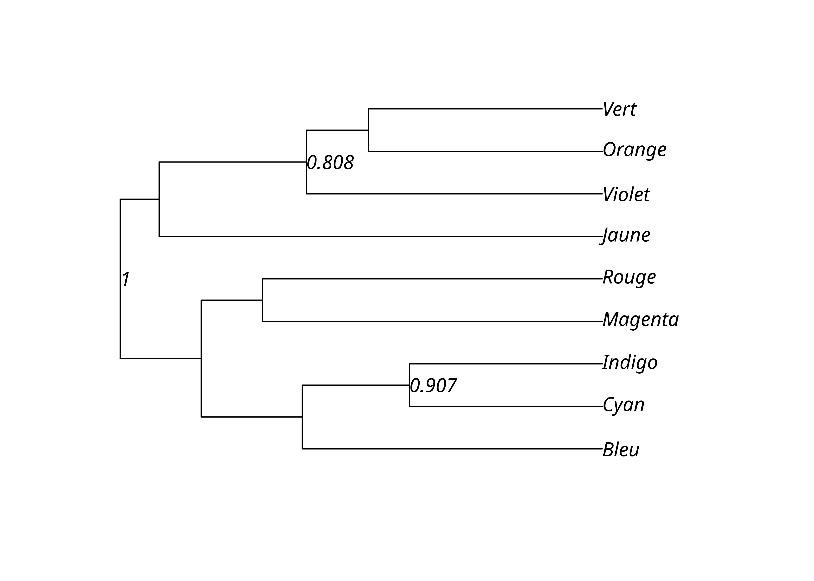

4 Évaluation des résultats
4.1 Évaluation de la robustesse
Il est utile d’évaluer la robustesse des résultats obtenus. On peut le faire avec un ré-échantillonnage aléatoire avec remise (bootstrap) qui va simuler de la variation et permettre ainsi de quantifier la sensibilité des résultats aux données de l’échantillon observé. Cette méthode permet d’obtenir pour chaque branche de l’arbre la proportion d’arbres ré-échantillonnés qui contiennent cette branche et ainsi d’identifier les branches reposant sur un faible nombre de données.
On peut par exemple évaluer nos résultats obtenus par UPGMA.
Il faut au préalable récupérer la matrice de données. C’est totalement redondant mais il s’agit d’une contrainte technique. Il faut en plus définir une fonction qui sera appliquée à chaque échantillon, ici on utilise la composition de phyDat(), Hamming() puis upgma(). On définit également à l’avance le nombre de ré-échantillonnages à effectuer, ici 1000.
lx_m <- PhyDatToMatrix(lx_phy)
boot_upgma_hamming <- function(x) {
upgma(Hamming(MatrixToPhyDat(x)))
}
n_bs <- 1000On peut alors lancer la procédure de ré-échantillonnage sur l’arbre obtenu par UPGMA et la matrice de données. Même avec 1000 ré-échantillonnages, on obtient les résultats en un temps très court.
La fonction set.seed() permet de fixer la graine aléatoire et d’assurer la reproductibilité des résultats.
set.seed(123456)
lx_upgma_bs <- boot.phylo(lx_upgma,
lx_m,
boot_upgma_hamming,
B = n_bs,
trees = TRUE,
quiet = TRUE
)On peut ainsi obtenir le nombre de ré-échantillonnages où chacun des clades de l’arbre par UPGMA apparaît, les transformer en proportions, et affecter ces valeurs aux nœuds internes de l’arbre. On peut alors les afficher sur le dendrogramme.
upgma_bs_scores <- prop.clades(lx_upgma, lx_upgma_bs$trees, rooted = TRUE)
upgma_support_pct <- upgma_bs_scores / n_bs
lx_upgma$node.label <- upgma_support_pct
plot(lx_upgma, show.node.label = TRUE)Une autre méthodes consiste à directement afficher les résultats avec plotBS().
plotBS(lx_upgma, lx_upgma_bs$trees)
On peut choisir de n’afficher que les valeurs supérieures à un certain seuil, typiquement 70%.
upgma_support_pct[upgma_support_pct < .7] <- NA
lx_upgma$node.label <- upgma_support_pct
plot(lx_upgma, show.node.label = TRUE)
Ou plus simplement avec plotBS():
plotBS(lx_upgma, lx_upgma_bs$trees, p = 70)
4.2 Résumer l’accord entre des résultats
Une analyse phylogénétique résulte souvent non pas en un arbre unique mais en un ensemble d’arbres. Comme ce n’est pas le cas de nos exemples jusqu’ici, générons un ensemble de 10 arbres aléatoires.
trees <- map(1:3, ~ rtree(n = 9))
trees <- as.multiPhylo(c(trees[1], trees[1], trees[1], trees, trees))Il est possible de résumer l’accord entre ces arbres par un arbre consensus qui ne contient que les clades présents dans une proportion p des arbres. Un arbre consensus est donc normalement moins résolu que les arbres obtenus.
Un arbre consensus strict ne contient que les clades présents dans tous les arbres (p = 1). Sans surprise, on obtient un «râteau».
Un arbre consensus n’a pas en principe de longueurs de branches.

Un arbre consensus majoritaire contient lui les clades présents dans la majorité (p ≥ .5) des arbres.

score de parcimonie, CI, RI, etc.